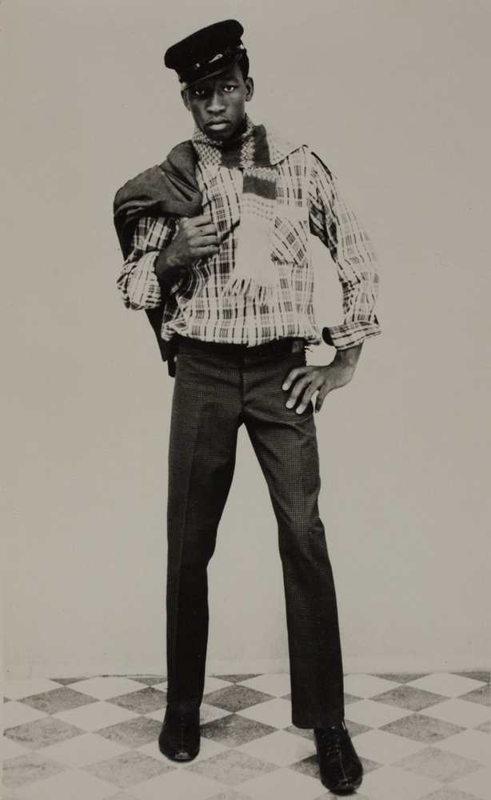

Untitled (I Pose with My Cap)
Malick Sidibé · c. 1965 · Gelatin silver print · 13 × 8 cm (image) · Art Institute of Chicago
In copyright. Look and learn: shown for study, not for download.
Malick Sidibé opened his studio in the Bagadadji neighbourhood of Bamako in 1962, two years after Mali's independence from France. In the studio he lit with tungsten lamps only, and he told his clients jokes to put them at ease. He had started in 1955 as an apprentice to the photographer Gérard Guillat, who first hired him to decorate the studio. This print is thirteen centimetres tall. In 2007 Sidibé became the first photographer and the first African to receive the Golden Lion for Lifetime Achievement at the Venice Biennale.